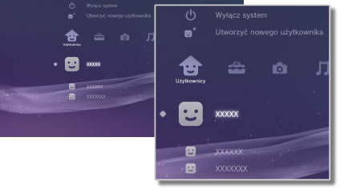

Użytkownicy > Kategoria Użytkownicy
Kategoria Użytkownicy
Utwórz użytkowników lub wyłącz konsolę PS3™. Jeśli zostanie utworzonych wielu użytkowników, dane każdego z nich, takie jak zapisane dane oprogramowania w formacie PlayStation®3, wiadomości wysłane i odebrane w kategorii  (Znajomi) oraz zakładki w programie
(Znajomi) oraz zakładki w programie  (Przeglądarka internetowa), są zarządzane osobno. W kategorii
(Przeglądarka internetowa), są zarządzane osobno. W kategorii  (Użytkownicy) wyświetlane są następujące ikony.
(Użytkownicy) wyświetlane są następujące ikony.

 |
Wyłącz system | Wyłącz konsolę PS3™. |
|---|---|---|
 |
Utworzyć nowego użytkownika | Utworzenie nowego użytkownika. |
 |
(Nazwa użytkownika) | Zalogowanie się do konsoli PS3™. |
Wskazówka
Poniższe typy danych zapisanych na dysku twardym są wyświetlane niezależnie od tego, który użytkownik jest zalogowany. Jeśli dane zostaną usunięte, inni użytkownicy również nie będą mogli z nich korzystać. Należy zachować ostrożność, aby przypadkowo nie usunąć ważnych danych.
- Saved data for PlayStation®2 / PlayStation® format software
Zapisane dane oprogramowania w formacie PlayStation®2 / PlayStation®. - Gry wyświetlane w kategorii
 (Gra).
(Gra). - Pliki wideo wyświetlane w kategorii
 (Wideo).
(Wideo). - Pliki muzyczne wyświetlane w kategorii
 (Muzyka).
(Muzyka). - Pliki graficzne wyświetlane w kategorii
 (Zdjęcia).
(Zdjęcia).
Informacje
- Niektóre produkty w wersji oprogramowania w formacie PlayStation®2 lub PlayStation® mogą działać na konsoli PS3™ inaczej niż na konsoli PlayStation®2 lub PlayStation®, lub mogą działać nieprawidłowo.
- Ponadto oprogramowanie w formacie PlayStation®2 nie może być odtwarzane na niektórych konsolach PS3™. Szczegółowe informacje można znaleźć w dokumencie [Rodzaje odtwarzanych płyt], w witrynie SCE dla danego regionu lub w dokumentacji dołączonej do konsoli PS3™.